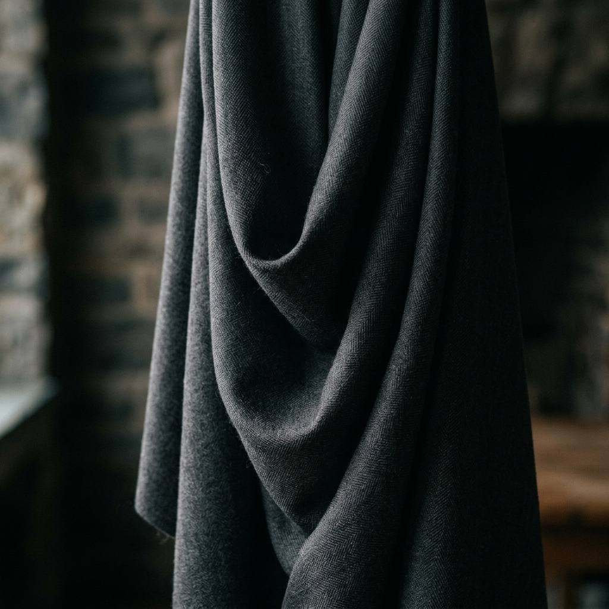
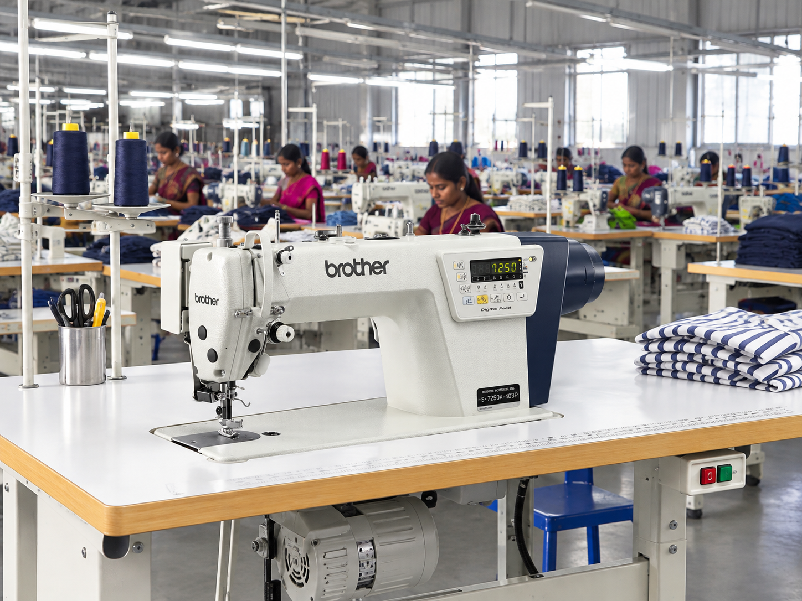
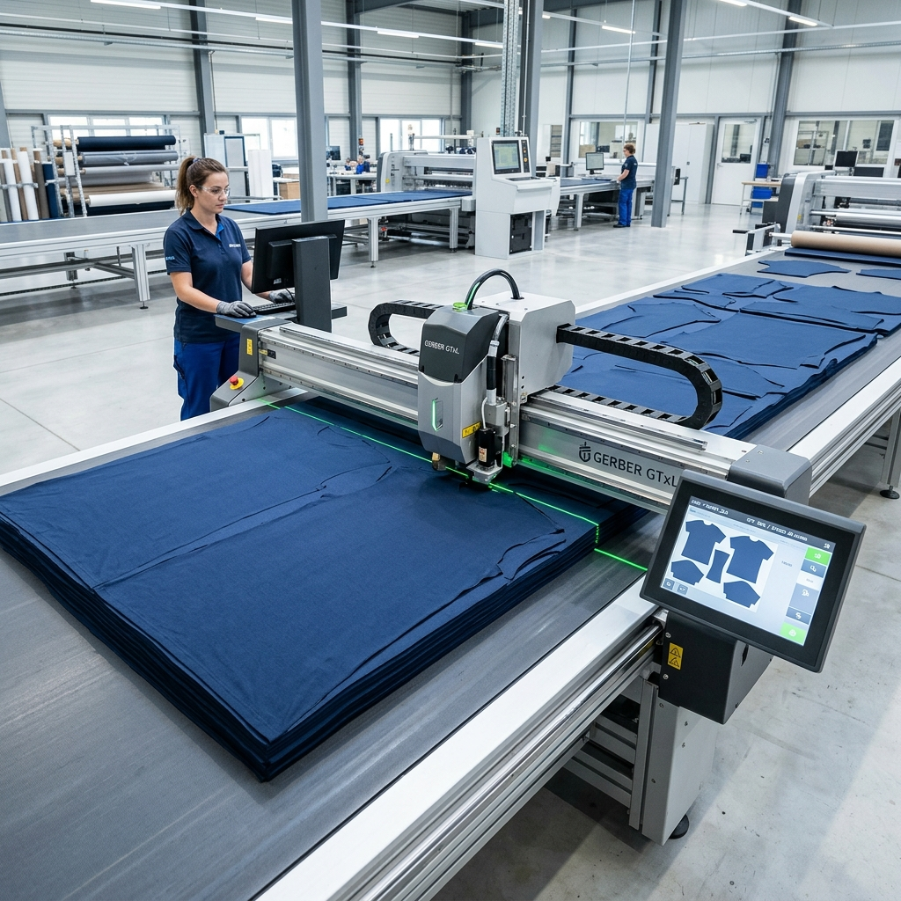
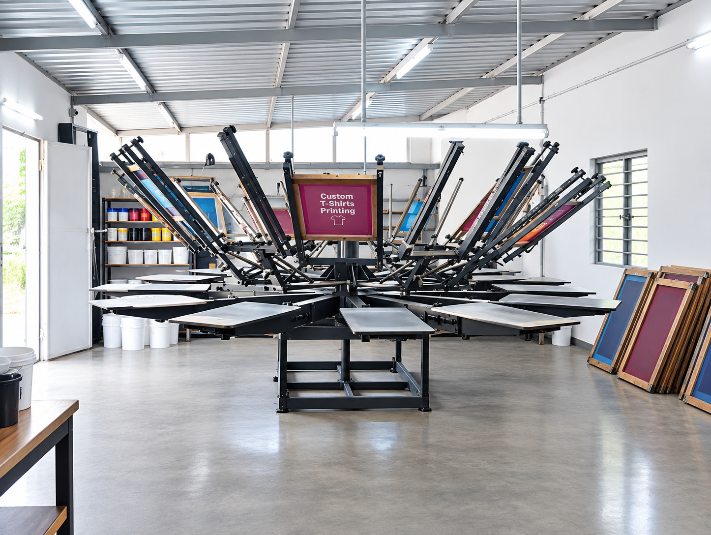
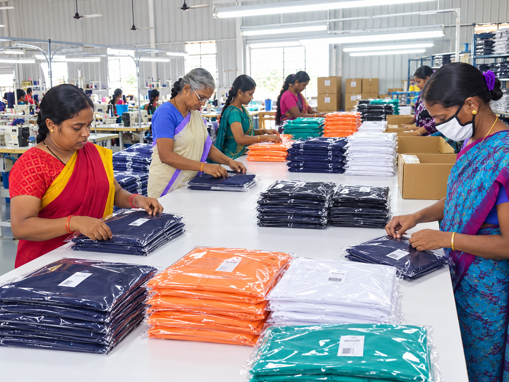

Export-Ready Garments,
Built on 30 Years of Experience
A trusted Tamil Nadu Garments manufacturer and exporter supplying menswear, ladies' wear and kids' wear to international buyers.
Sri Shanmugam Exports
Established in 1993 in Tirupur, the knitwear capital of India, Sri Shanmugam Exports has spent more than three decades manufacturing Garmentss for overseas buyers. Today our production unit is based in Aruppukottai, Tamil Nadu, where we manage cutting, stitching, printing and packing under one roof.
We specialise in men's, ladies' and kids' Garments and have shipped orders to Europe, the United Kingdom, North America and Australia. Our focus is simple: consistent quality, dependable lead times and clear communication with every buyer.
We operate alongside our sister concern, Sri Sidhi Vinayaga Exports, which allows us to scale production to meet larger programmes.
30+ Years
In Garments Manufacturing
4,000 Pcs
Daily Capacity (Basic Garments)
6+ Countries
Exported To

End-to-End Manufacturing Process
From fabric to finished carton, every stage is handled in-house to keep quality and delivery under our control.

01. Cutting
Accurate fabric cutting to approved patterns and size specifications, with careful fabric utilisation to reduce wastage.
02. Stitching
A dedicated line of 75 flatlock, overlock and single-needle machines delivering strong, clean and comfortable finishing.

03. Printing
Chest printing of up to 12 colours, producing sharp, vibrant and durable designs to match your artwork. Embroidery is our next planned addition.

04. Finishing & Packing
Thread trimming, pressing and final checks, followed by packing to your labelling and carton requirements, ready for shipment.
Production Capacity & Equipment
Our facility is equipped to handle regular and repeat programmes in men's, ladies' and kids' Garments.
Stitching Line
20 flatlock machines
40 overlock machines
15 Singer lockstitch machines
Finishing
2 thread trimming machines
3 ironing tables
Printing
12-colour manual chest printing unit
Product Range
Men's wear, ladies' wear and kids' wear. Capacity of 4,000 pieces per day on basic Garments.
Markets & Buyers We Serve
We have exported to Italy, the United Kingdom, Germany, the USA, Canada and Australia, and we have worked with leading buying houses and sourcing offices, including 5th Avenue and Com-Textiles, as well as several buying offices in Bangalore.
Planning Your Next Garments Programme?
Send us your specifications and target quantities. We will respond with a clear quotation and delivery plan.
Request a Quote